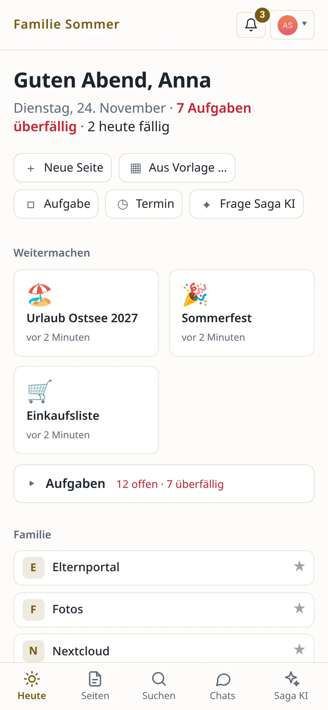
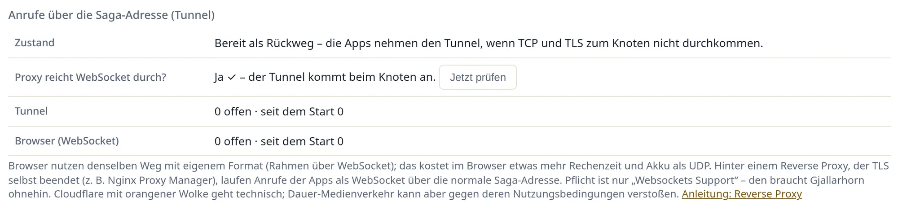

Escribe tu propia saga.
Tu propio servidor para páginas, chat y llamadas
Saga lleva páginas, bases de datos, chat, llamadas, calendarios y tareas a tu propio servidor: para tu familia, tu asociación o tu equipo, con apps para el móvil y el escritorio.
- Un dominio, solo el puerto 443
- Docker Compose
- Chats y llamadas cifrados de extremo a extremo
Beta: lista para el día a día, pero aún joven – haz copias de seguridad con regularidad; algunas funciones son expresamente experimentales.

- Páginas
- Bases de datos
- Chats cifrados
- Llamadas en grupo
- Federación
- Editor en directo
- Widgets
- Asistente de IA
- Calendarios
- Copias cifradas
- Web · iPhone · iPad · Android · Mac · Linux
- AGPL-3.0
Novedades de Saga 2.5
El capítulo más grande hasta ahora.
Las llamadas pasan ahora por un nodo integrado, el editor trabaja en directo con otras personas y los chats pueden mucho más; además, subpáginas, sellos, portadas y widgets para tus páginas.
Escribir juntos, en directo
El nuevo editor predeterminado (Tiptap) muestra al instante lo que escriben los demás y sus cursores en cuanto el administrador activa la edición en directo, incluso con personas de servidores conectados.
- Menciones de personas, fechas y recordatorios con @
- Bloques sincronizados: un mismo contenido en varios lugares
- Tablas, código, fórmulas, Mermaid, columnas y multimedia directamente en el texto
Subpáginas dentro de la página
Las subpáginas aparecen en su página madre, como lista o como galería con portadas.
Sellos como iconos
36 sellos de Saga en tres colores junto a los emojis, para páginas, bases de datos y filas.
Galería de portadas
100 imágenes del elfo de Saga en ocho grupos y una portada aleatoria para las páginas nuevas.
Widgets y gráficos
Widgets rediseñados (cuenta atrás, progreso, cifra clave, hábitos, tiempo) y gráficos a partir de bases de datos.
Mudarse es fácil
Importa desde Notion, Trilium, Markdown/Obsidian y CSV; exporta como CSV y Markdown.
App de Mac sobre la web
La app de escritorio para Mac muestra la interfaz web de tu servidor, con notificaciones, widgets y túnel para las llamadas.
Todos los cambios (en alemán) Actualizar desde 2.3/2.4 (en inglés)
Chats y llamadas
Habla sin que nadie escuche.
Los chats y las llamadas están cifrados de extremo a extremo: tu servidor guarda los mensajes, pero no puede leerlos, y el administrador tampoco.
Llamadas con GjallarhornExperimental
Saga trae su propio nodo multimedia. Funciona detrás de cualquier proxy inverso con soporte de WebSocket, a través de tu dirección normal de Saga: sin segundo nombre y sin otro puerto.
- Llamadas individuales y en grupo con vídeo, audio y pantalla compartida; en el lanzamiento, hasta 4 participantes o dispositivos
- Convierte una llamada individual en grupal sin que se corte la conversación
- Añade personas, incluso de fuera del chat; quien no contesta aparece en «No están» con «Volver a llamar»
- Cambia o añade dispositivos: pasa la llamada del móvil al portátil o añade el portátil solo para compartir pantalla
- Cifrado de extremo a extremo, también a través del nodo
Gjallarhorn es experimental en 2.5. Safari y los navegadores de iPhone/iPad todavía llaman de forma directa o mediante TURN; las apps y la app de Mac usan el túnel a través de la dirección de Saga.


Chats que hacen más
Los chats modernos (nivel 3) son ahora la opción predeterminada: siguen cifrados de extremo a extremo y traen todo lo que necesitas a diario.
- Reacciones, respuestas y edición, formato y @menciones
- Mensajes de voz de hasta 15 minutos
- Fija mensajes y chats, silencia durante un tiempo, marca como no leído
- Grupos con administradores, imagen y descripción, contactos y denuncias a los administradores


Federación
Muchos servidores. Una saga.
Conecta tu servidor con los servidores Saga de tu familia, tu club o tus amigos. Comparte páginas, chatea y llama entre servidores: el contenido se queda con su propietario y cada solicitud entre los servidores va firmada.
- Compartir páginas
- Editar juntos
- Chats
- Llamadas
- Libreta de direcciones
- Firmado (Ed25519)
Funciones
Todo lo que quieres guardar. En un solo lugar.
Sin nube y sin suscripción: cada persona tiene su propio espacio privado y comparte lo que quiere compartir.
Hoy
La página de inicio te recibe con lo que viene: tareas pendientes, eventos, páginas abiertas hace poco y mosaicos de tus servicios, visibles según tus grupos.

Páginas
Bloques, subpáginas, plantillas, versiones, comentarios y exportación a Markdown, con búsqueda rápida y árbol de páginas.
Bases de datos
Tabla, tablero, lista, galería, calendario, línea de tiempo y gráfico, con fórmulas, resúmenes, relaciones y filtros.
Calendarios y tareas
Calendarios CalDAV (p. ej. Nextcloud, Radicale) y tareas desde bases de datos, con prioridad y repetición.
Asistente de IA
Opcional, con un servicio compatible con OpenAI que tú elijas: consulta tus páginas, cita las fuentes y te ayuda a escribir.
Federación
Los servidores de Saga se conectan entre sí: comparte y edita páginas entre servidores, chatea y llama.
Compartir y publicar
Comparte con personas y grupos (leer, comentar, editar) o publica páginas que cualquiera puede leer sin cuenta.
Copias y Nextcloud
Copias de seguridad diarias cifradas en S3, en una carpeta o en Nextcloud, y archivos de Nextcloud dentro de las páginas.
LDAP y SSO
Cuentas locales, LDAP/Active Directory y OpenID Connect; acceso a los servicios mediante grupos.
Cinco idiomas
Interfaz y apps en alemán, inglés, español, ruso y tailandés, a elegir por cuenta.


Las capturas muestran la interfaz en alemán de un servidor de demostración.
Apps
Como en casa en cada dispositivo.
Saga funciona en cualquier navegador actual, también en el móvil. Además hay apps en las que inicias sesión con un código QR.

iPhone & iPad
App nativa con widgets. Aún no está en la App Store: compílala tú.
Android
App nativa como APK en las versiones de GitHub, Android 8 o posterior.
Mac
App de escritorio que envuelve la interfaz web, firmada y notarizada (macOS 26 o posterior).
Linux
App de GNOME como RPM (Fedora, RHEL 10) y como Flatpak para cualquier distribución.
Listo en pocos minutos
Tu servidor. Tus reglas.
Saga funciona con Docker Compose. Desde fuera solo necesitas un dominio y el puerto 443 en tu proxy inverso; las llamadas siguen el mismo camino.
# descargar y configurar git clone https://github.com/yggdrasil-sh/saga.git && cd saga cp .env.example .env # en .env: BASE_URL, SECRET_KEY, POSTGRES_PASSWORD docker compose pull && docker compose up -d # primera contraseña de administrador docker compose logs saga | grep Admin-Konto # actualizar más adelante (Saga hace antes una copia de seguridad) docker compose pull && docker compose up -d

- IniciarDescarga la imagen e inicia: Saga escucha en el puerto 8080 y el área de administración en el 8081 (solo local).
- Proxy delanteUn dominio con HTTPS en el puerto 443 apunta a Saga. En Nginx Proxy Manager activa «Websockets Support»; Caddy y Traefik lo hacen solos.
- ConfigurarCrea cuentas, grupos y servicios en el área de administración; si quieres, LDAP o SSO. En «Llamadas», «Comprobar ahora» prueba el camino a través del proxy.
- Conectar las appsInicia sesión con un código QR desde «Apps y dispositivos». Listo.
Seguridad y privacidad
Tus datos se quedan contigo
Saga funciona en tu servidor. Sin rastreo ni telemetría: Saga solo habla con los servicios que tú configuras (y, si quieres, con GitHub para buscar actualizaciones).
Cifrado de extremo a extremo
Chats y llamadas cifrados de extremo a extremo, también entre servidores conectados y a través del nodo.
Inicio de sesión seguro
Llaves de acceso y apps de autenticación, 2FA obligatoria para administradores o para todos. Los intentos fallidos se frenan; las cuentas nunca se bloquean.
Copias con plan
Diarias, cifradas con age, retención 7/4/6 y restauraciones de prueba; además, una copia antes de cada actualización y copias personales para cada persona.
Administración aparte
Puerto propio, accesible de fábrica solo en local, con su propio inicio de sesión y diagnóstico.
Tú decides
Federación, chat, llamadas y libreta de direcciones se pueden desactivar por servidor conectado; confirmaciones de lectura y «en línea», por persona.
Código abierto
AGPL-3.0, todo en GitHub: servidor, apps y las herramientas con las que se hicieron estas capturas.
¿Todo listo para tu propia saga?
Software libre bajo la AGPL-3.0. Descárgalo, alójalo tú mismo y hazlo tuyo.